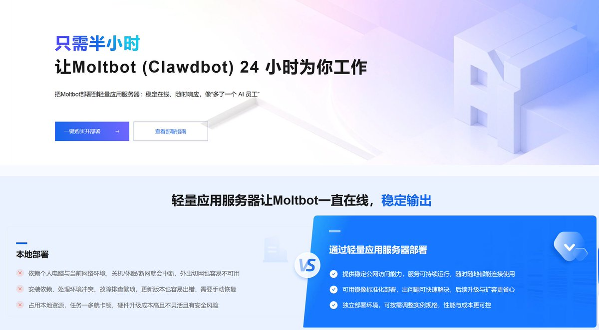
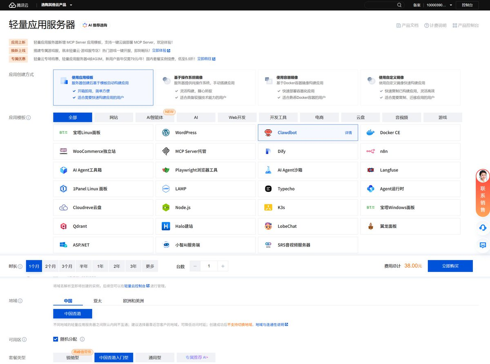
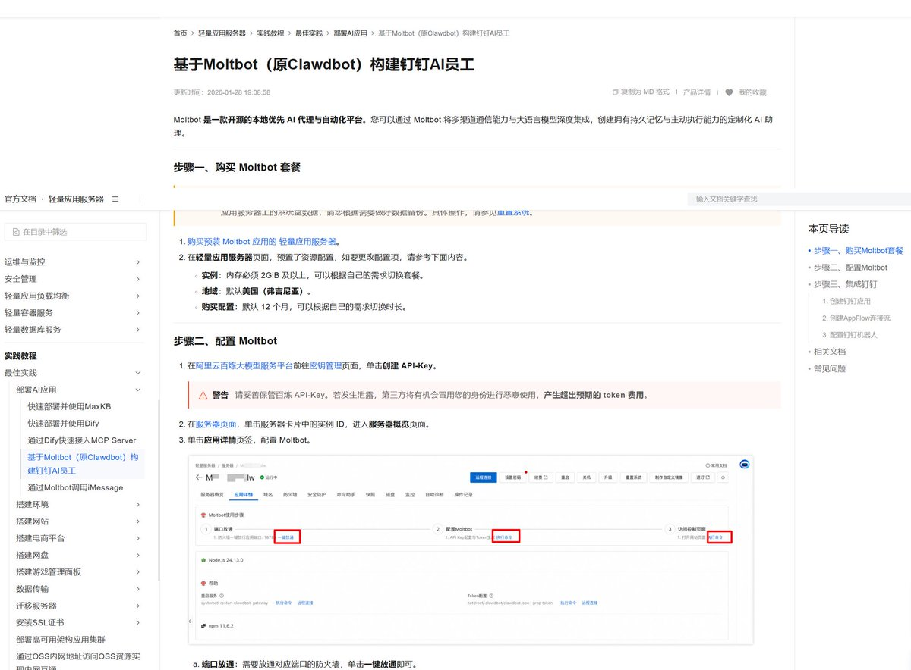
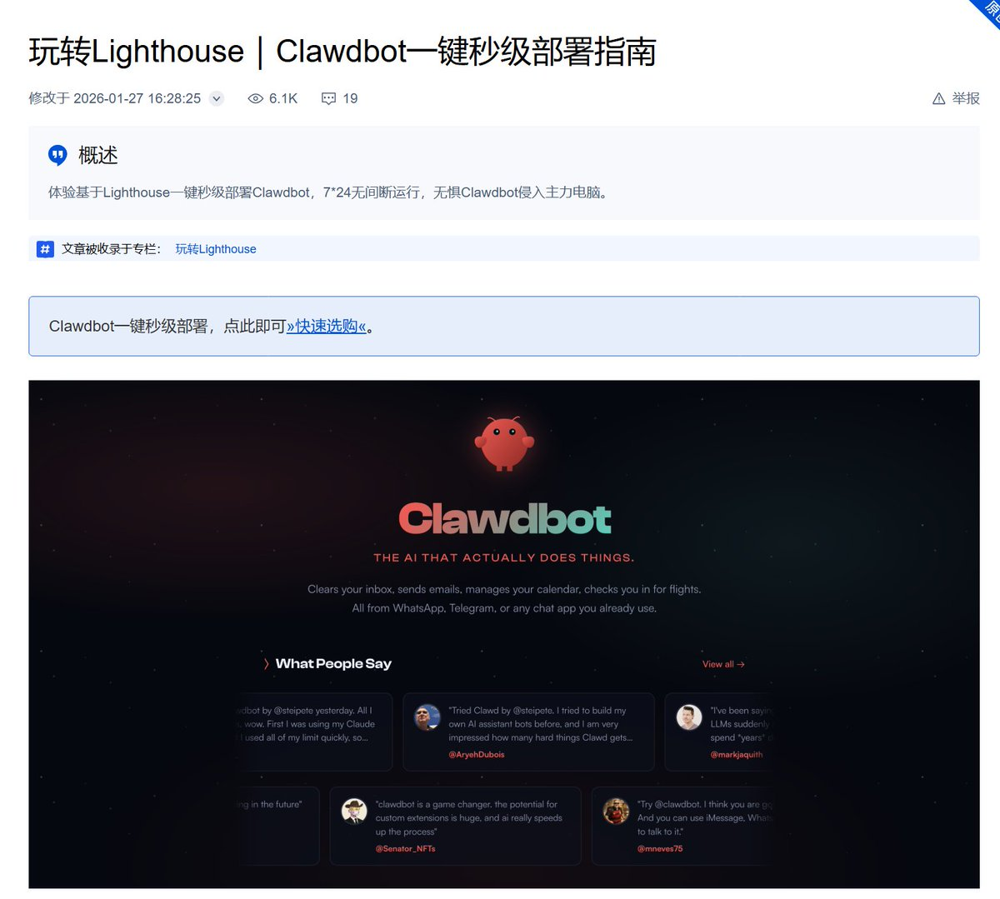

阿里云和腾讯云开始在轻量应用服务器上线Moltbot（Clawdbot）了，继飞书后阿里云官方教程甚至可以集成钉钉，为自己构建AI员工……
在VPS部署没有本地Mac Mini上体验好，而且这东西感觉是热度炒炒就过了，只会在程序员及锤子圈子流行，其余都是跟风消费，不成规模。
还记得去年腾讯云首发DeepSeek、幻兽帕鲁一键部署等，抢了一波流量罢了，而且国内VPS外网互联也有点😅
搭个助理玩就好了，与其用人家配好的模板，不如还是自己构建。此处官方支持的聊天软件几乎是我们日常不会使用的，顶多放Discord或Telegram上，不可能放国内IM还要自我审查
在VPS部署没有本地Mac Mini上体验好，而且这东西感觉是热度炒炒就过了，只会在程序员及锤子圈子流行，其余都是跟风消费，不成规模。
还记得去年腾讯云首发DeepSeek、幻兽帕鲁一键部署等，抢了一波流量罢了，而且国内VPS外网互联也有点😅
搭个助理玩就好了，与其用人家配好的模板，不如还是自己构建。此处官方支持的聊天软件几乎是我们日常不会使用的，顶多放Discord或Telegram上，不可能放国内IM还要自我审查



